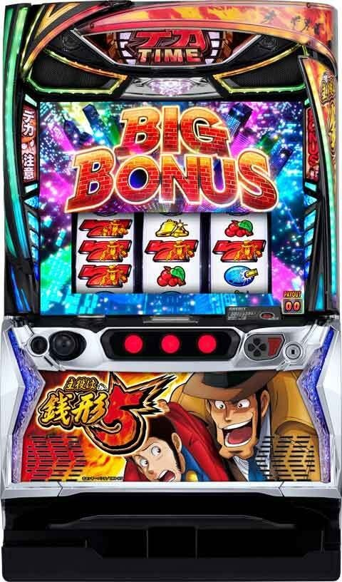
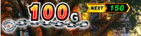
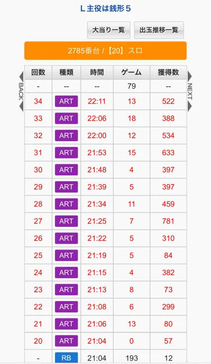
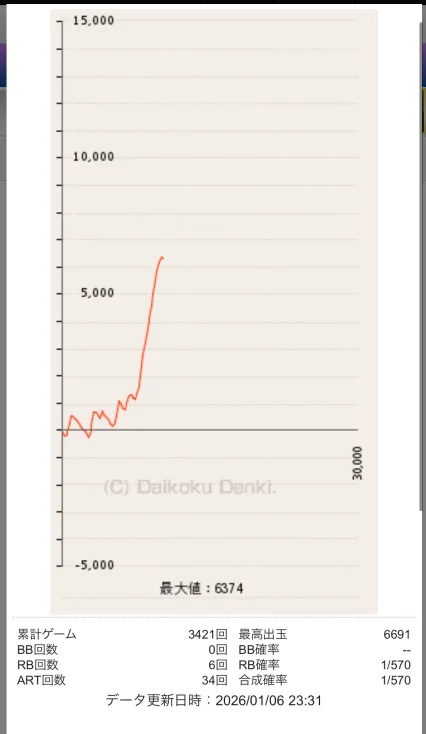
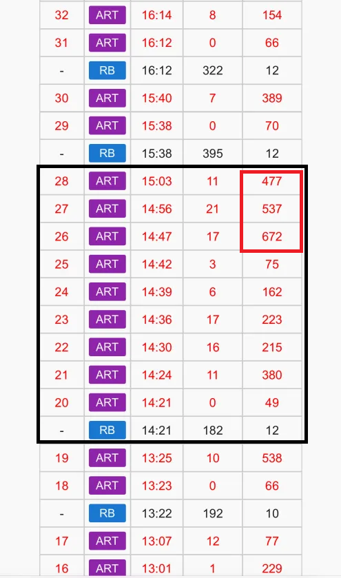
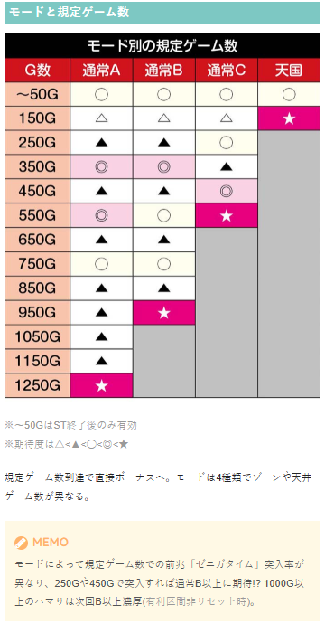
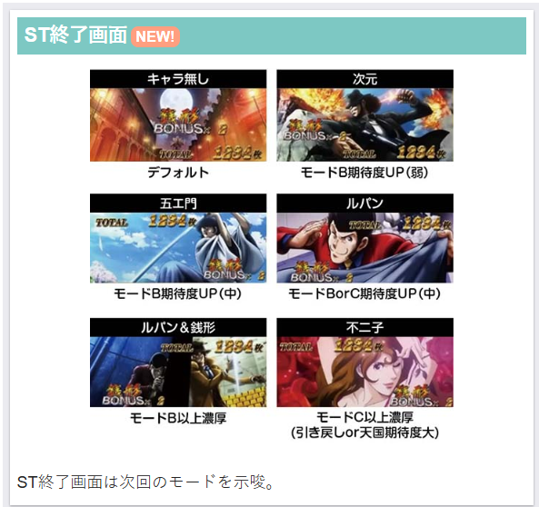
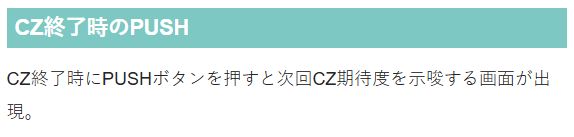
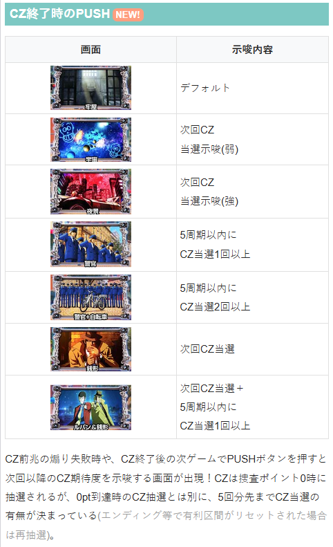
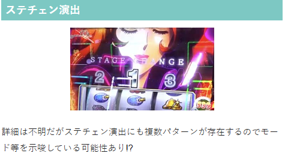

主役は銭形5

【天井情報】
1250G到達時は50%で不二子デカタイムに突入。
設定変更時は天井が850Gに短縮。
1000Gハマり後は次回通常B以上。
【リセット判別】
不明
リセット時はG数の内部加算あり。
【有利区間について】
基本的に差枚+2000枚以上時にボーナス当選で有利切れ？
+2000枚未満で有利切れするケースもありハッキリしなそう。
狙い目
【リセット狙い】
200Gから
【ゲーム数天井狙い】
前回1000G未満ハマり後
750Gから
前回1000G以上ハマり後（B以上濃厚）
610Gから
【ゾーン狙い】
150Gゾーン
下位ST後 120Gから
上位ST後or一撃2500枚（3000枚？）以上後or差枚+1800枚以上 0Gから
350Gゾーン
310Gから
550Gゾーン
510Gから
【捜査ポイント狙い】
残り100pt未満なら周期到達まで
※0pt到達時のCZ抽選とは別に、0pt到達時のCZ当選の有無は5回分先まで決まっており「CZ終了時のPUSH」でその示唆が出現!?
【次回ゾーン数値の色】
通常、NEXTの数値は緑色だが、赤色になっている場合があるらしい。（現場で未だに確認取れず）
その場合は次回ゾーンの期待度アップになりそうなので、積極的に行くなら次回ゾーンまで消化？

【示唆関連の押し引きについて】
ST終了画面
モードC以上濃厚なら0Gから
モードB以上濃厚はあまり気にしなくて良さそう？
CZ終了後のPUSHボタン
銭形、ルパン＆銭形 捜査ポイント到達まで
夜景 捜査ポイント到達まで？
警官+自転車 天井狙いのボーダーを下げつつ、次回以降50％以上CZ当選なら続行？
ステージチェンジ時のアイキャッチ
モード示唆をしていると思われる。
不二子でモードC天井当選報告あり。積極的に行くなら当選まで？
引き戻しの押し引きについて
やめ時の項目を参照
【有利区間関連狙い】
差枚+1500枚以上 80Gから150Gゾーン消化まで
差枚+1800枚以上 0Gから150Gゾーン消化まで
やめ時
引き戻しが弱いため、原則AT終了後は即やめ。
以下の場合は続行
モードC以上濃厚なら当選まで
捜査ポイント200pt未満（捜査ポイント消化後、続行する状況が無ければやめ）
上位ST後など、0Gから打てる場合は引き戻しも込みで150ゾーンまで
ST中のアイテムで次回不二子デカタイムの時も引き戻し確認？
※ST終了後、80G以内にボーナス当選で逮捕人数を引き継いで復帰する。80G以内のCZ当選なら成功で引き戻し扱いとなる。
その他
差枚の計算方法
確実に見抜けるものではない。あくまで差枚を予測する感じ。
有利切れの条件やタイミング、履歴の読み方
差枚+2000枚以上からボーナス当選すると有利が切れると言われている。
差枚+2000枚未満でも有利切れするケースもあるが条件は不明。
ボーナス終了時に差枚+2400枚を超えていたら、有利切れ後１回目のボーナスだったと予測する。
上位ST中のボーナスは基本的に380枚以上出る。上位ST中の獲得枚数でそれ以下だとエンディングだった可能性が高い。
実際のデータからの予測方法
例として以下のデータから有利切れのタイミングを予測し、差枚を予測する。
21:04 初当たり時点で差枚が+1200枚くらい
21:19 ボーナス（84枚）で差枚が+2000枚超え
21:22 ボーナス（310枚）で差枚が+2400枚くらいのためエンディングボーナス
21:25 有利切れ後1回目のボーナス（781枚）
21:53 ボーナス（633枚）終了時点で差枚+2400枚を超えてるため、有利切れ後1回目のボーナス
22:11 ボーナス終了時点で差枚が+2000くらい
※以下のデータの様にボーナスの獲得枚数やグラフがしっかりしていないと予測も厳しい。
※画像や履歴を送って差枚の質問を受けても、ご回答出来ない事があるのでその点はご了承ください。


上位ST後を推測する方法
履歴から上位と下位の見極めは完全に出来ない。
ただ上位STでのボーナスは最低でも500枚以上の払い出しが行われるボーナスになることや、7セット以上で上位STに移行している可能性アップ、9回目で100％上位に移行することなどを考慮して推測する。
以下に上位STが推測される履歴
・1回のSTで3000枚以上など明らかに一撃で出ていた。
・10セット以上続いていた。
・7セット以上続いており、かつ最後の粒の獲得枚数が500枚以上（450枚以上？）。最後の粒500枚以上は2回以上続いている方がより確実。
・有利区間差枚+2400前後でエンディングに突入。差枚+2400手前からでちょうど+2400枚付近で終了しているような獲得枚数のボーナスがあった。その後の粒も獲得枚数は500枚以上（450枚以上？）となっている。
上位ST突入したと推測される履歴
黒枠のSTで14:47の履歴が6回目でボーナスのBIGジャッジを成功させ、上位ST突入したと推測される。






参考元
基本情報
- メーカー: オリンピア
- 機械割: 97.9% 〜 112.1%
- 導入開始日: 2025年10月06日（月）
- ゲーム性概要: ●ボーナス当選契機はゲーム数消化・ポイント契機のCZ・デカ目 ●初当りの銭形ボーナス後は10G＋αのデカタイムで連チャンを目指すゲーム性 ●デカタイム中のボーナス期待度は約59%（設定2） ●ボーナス当選時の一部で移行するBIGジャッジに成功すればBIGボーナスを獲得 ●3・6・9回目のボーナスがBIGジャッジのチャンス!? ●BIGボーナス後はボーナス期待度約80%（設定2）の超デカタイムへ突入！


打ち方
打ち方・小役
打ち方（小役狙い）
「最初に狙う絵柄」 左リール枠上から上段にBARを狙う。左リールの停止形にかかわらず、中・右リールはフリー打ちでOKだ。
「レア役の停止例」
「デカ目の停止例」 通常時・ST中ともにデカ目停止でボーナス濃厚、中段チェリーはBIGボーナス濃厚となる。
変則押しはNG
通常時・押し順ナビなし時は左リール第1停止での消化を推奨する。
白7狙い（小役狙い）
［上段に白7を目押し］ 左リール枠内に白7を目押しすることで、BAR狙いとは違った出目法則が楽しめる。 まずは上段に白7をビタ押しした時の法則を紹介。1コマでもズレた場合の停止法則もページ下側で紹介しているぞ。
［白7下段停止］ 成立役：ハズレorプラムorチャンスリプレイorデカ目 この停止形からリプレイは揃わないので、リプレイ告知発生時はデカ目の1確になる。
［白7上段停止］ 成立役：リプレイorデカ目 リプレイが揃わなければデカ目濃厚。一見ベルも揃いそうだが、ここからベルは揃わないので、ベルナビが出ていた場合もデカ目濃厚になる。ちなみに、白7を上段に押すと中段チェリーを引き込めないため、中段リプレイ・リプレイ・チェリーのデカ目が中段チェリーの代用として停止する。
［白7中段停止］ 成立役：デカ目 デカ目（確定チェリー）の1確！
［ベル上段停止］ 成立役：ベルorデカ目 上段に白7を押してベルがスベって来た場合、デカ目は上段ベルハズレの1種類だ。
［角チェリー停止］ 成立役：弱チェリーor強チェリー
【白7を枠上に押した場合】 基本的な停止形は上段白7目押し時と同じだが、上記停止形（白7枠上停止）が角チェリー扱いになる。
【白7を中段に押した場合】 中段に押した場合、デカ目の停止形などは上段白7狙い時と同じだが、中段にリプレイが揃う可能性があるため注意。 左リール中段白7停止時は上段白7狙い時と同じくデカ目の1確になる。
ベル停止時は上段白7狙い時と同じくベルorデカ目だが、斜めベルハズレのデカ目の可能性がある。
コマ数的に中段チェリーも引き込んでくれる。 もちろん出現時はBIG濃厚だ（BARを狙えばBARが揃う）。
中段チェリー
中段チェリーの恩恵
| 状態 | 恩恵 |
|---|---|
| 通常時 | BIGボーナス＋ ゼニロボビッグバンorエンディング移行 |
| ST中 | 払い出し1000枚以上のBIGボーナス （有利区間リセット直前を除く） |
| 銭形ボーナス中 | 払い出し1000枚以上のBIGボーナス1G連 orエンディング移行 |
※BIGボーナス中は中段チェリーは出現しない
解析情報通常時
小役関連
通常時・小役確率
| 役 | 確率 |
|---|---|
| 3枚プラム | 1/7.9 |
| 15枚プラム | 1/65.5 |
| リプレイ | 1/11.1 （CZ中は1/11.4） |
| 弱チェリー | 1/58.6 |
| チャンスリプレイ | 1/89.8 |
| ベル | 1/59.5 |
| 強チェリー | 1/512.0 |
※レア役合算確率は1/21.3
ボーナス本前兆中以外・デカ目確率
※CZ中のデカ目確率は1/372.6
デカ目はボーナス直撃濃厚。非本前兆中のデカ目は高設定ほど出現しやすい。
通常時・デカ目の出現条件
| 条件 | 内容 |
|---|---|
| ① | ボーナス本前兆中以外に、 設定に応じて 出現を抽選 |
| ② | ボーナス本前兆中に抽選で出現（設定差なし） |
| ③ | 本前兆の最終ゲームで デカ目のリプレイフラグ成立時の約80%で出現 |
末尾50G到達（ボーナス当選ゲーム到達）から、ボーナス告知ゲームまでが本前兆中。 本前兆の最終ゲームで内部的にデカ目のリプレイフラグを引くと、約80%で演出としてデカ目が出現する。
モード
モードごとの天井
| モード | 天井 |
|---|---|
| 通常A | 1250G＋α |
| 通常B | 950G＋α |
| 通常C | 550G＋α |
| 天国 | 150G＋α |
モードの特徴
高設定ほど上位のモードが選ばれやすい
1000Gを超えてのボーナス当選時は、次回モード通常B以上濃厚（※）
1250G＋α到達時は約50%で初回STが不二子STになる
※有利区間リセット時や、950Gで当選したボーナスがCZなどで1000Gを超えて告知された場合を除く
モードごとのゾーン表
| ゲーム数 | 通常A | 通常B | 通常C | 天国 |
|---|---|---|---|---|
| ～50G | 〇 | 〇 | 〇 | 〇 |
| 150G | △ | △ | △ | 天井 |
| 250G | ▲ | ▲ | 〇 | ー |
| 350G | ◎ | ◎ | ▲ | ー |
| 450G | ▲ | ▲ | ◎ | ー |
| 550G | ◎ | 〇 | 天井 | ー |
| 650G | ▲ | ▲ | ー | ー |
| 750G | 〇 | 〇 | ー | ー |
| 850G | ▲ | ▲ | ー | ー |
| 950G | ▲ | 天井 | ー | ー |
| 1050G | ▲ | ー | ー | ー |
| 1150G | ▲ | ー | ー | ー |
| 1250G | 天井 | ー | ー | ー |
※期待度…▲＜△＜◯＜◎
有利区間移行時とボーナス当選時にモードと規定ゲーム数を決定。モードの移行率には設定差があり、高設定ほど良いモードが選ばれやすい。 50GのゾーンはST終了後のみ選択される可能性あり（AT終了時の引き戻し抽選に当選）。
CZ抽選
CZの抽選方式
| 抽選 | 内容 |
|---|---|
| 先決め抽選 | 5回分のポイント0到達時のCZ当否を先決めで抽選 |
| 当該抽選 | 先決めだけでなく0pt到達時にもCZ抽選 |
| トータル当選率 | 約22% |
CZの抽選タイミングは2箇所あり、上記のどちらかに当選すればCZに当選する。
捜査ポイント（周期抽選）
捜査ポイント性能
| 項目 | 内容 |
|---|---|
| 初期ポイント | 999pt |
| 減算契機 | 毎ゲーム最低1ptずつ減算、 レア役は大量減算のチャンス、 強チェリーは999pt減算 |
| 0pt到達時 | CZを抽選 |
| 0pt到達までの平均ゲーム数 | 142.2G |
| CZ当選率 | 約22%（0pt到達時の当選率） |
毎ゲーム1pt以上ずつ減算されていくポイントで、0ptに到達するとCZを抽選。レア役は大量減算のチャンス、強チェリーは999pt減算濃厚だ。 0pt到達時のキャラのリアクションでCZ当選期待度が変化する。
「リアクション」 不二子のリアクションなら大チャンス!?
「ポイント高確（ゼニガタイム）」 ゼニガタイム中とゼニガタイム終了後13G間はポイントの高確率状態となり、リプレイとレア役以外でもポイント減算を抽選する。
成立役ごとの減算ポイント
| 役 | ポイント |
|---|---|
| 下記以外 | 1pt |
| リプレイ | 5pt以上 |
| チャンスリプレイ | 50pt以上 |
| ベル | 50pt以上 |
| 弱チェリー | 50pt以上 |
| 強チェリー | 999pt |
1契機で減算されるポイントは1pt・5pt・10pt・50pt・100pt・200pt・500pt・999ptのいずれか。 ポイント高確中はリプレイやレア役以外でもポイント減算を抽選する（リプレイとレア役は非高確中と同様の抽選）。
ゼニガタイム
ゼニガタイム解説
規定ゲーム数消化で移行する前兆ステージで、ルパンを逮捕できればボーナス濃厚。 ゼニガタイム中は捜査ポイントの高確状態になっている。
規定ゲーム数抽選
規定ゲーム数
規定ゲーム数到達でボーナス当選濃厚。NEXT部分には次回の期待できるゾーンのゲーム数が表示されている。
逮捕チャレンジ（CZ）
逮捕チャレンジ概要
捜査ポイント0pt到達時の抽選で突入。銭形がルパン一味を逮捕できればボーナス濃厚となる。
逮捕チャレンジ（CZ）性能
| 項目 | 内容 |
|---|---|
| 契機 | 捜査ポイント0到達時の抽選 |
| 継続ゲーム数 | 最大9G |
| 消化中の抽選 | 成立役に応じたボーナス抽選、 レア役はチャンス |
| 成功期待度 | 約50% |
| 備考 | 不二子逮捕で不二子デカタイムへ |
「逮捕のチャンスは4回」 1戦目〜4戦目まで、最大4回の逮捕チャンスが発生。いずれか一人を逮捕した時点でボーナス当選となり、確定画面へ移行する。
「不二子逮捕でチャンス」 4戦目で登場する不二子を逮捕できれば、デカタイム（ST）の初回キャラが不二子（全レア役対応のST）になるので連チャン期待度がアップ！
ボーナス当選率 ルパン・次元・五ェ門
| 役 | 当選率 |
|---|---|
| 下記以外 | 0.4% |
| リプレイ | 25.0% |
| 右下がりプラム | 17.0% |
| 対応レア役 | 100% |
| 非対応レア役 | 40.2% |
| 強チェリー | 100% |
| デカ目 | 100% |
不二子
| 役 | 当選率 |
|---|---|
| 下記以外 | 0.4% |
| リプレイ | 6.3% |
| 右下がりプラム | 4.4% |
| レア役・デカ目 | 100% |
※CZ中のデカ目確率は1/372.6
キャラごとの対応レア役
| キャラ | 対応レア役 |
|---|---|
| ルパン | チェリー |
| 次元 | チャンスリプレイ |
| 五ェ門 | ベル |
| 不二子 | 全レア役 |
リプレイや右下がりプラム成立で勝利のチャンス。キャラごとの対応レア役はボーナス濃厚（対応役はST中と同じ）で、強チェリーとデカ目はキャラ不問でボーナス濃厚だ。
フリーズ
ロングフリーズ動画
実戦上は中段チェリーを契機に発生し、ゼニロボビッグバンを経由してBIGボーナスに突入していた。
中段チェリーの恩恵がBIGボーナス＋ゼニロボビッグバンorエンディング発生なので、状況によってはゼニロボビッグバンではなく、エンディングへ直行するかも!?
解析情報ボーナス時
ボーナス
銭形ボーナス概要
白7揃いで突入するボーナス。初当りは基本的に100枚払い出しで、ST中に当選した場合の平均払い出し枚数は300枚オーバー（設定2）。 消化中はリプレイとレア役でゼニポイントを貯めていき、メーターがMAX（20pt到達）になるとさまざまなアイテムを獲得できる。
※ST中の払い出し枚数は100枚〜3000枚から抽選
銭形ボーナス性能
| 項目 | 内容 |
|---|---|
| 契機 | 規定ゲーム数到達、CZ成功 |
| 初当り時・払い出し | 基本的に100枚（まれに300枚） |
| ST中・払い出し | 100～3000枚（設定2の平均313.5枚） |
| 消化中の抽選 | リプレイとレア役でゼニポイントを獲得し、 20pt到達でアイテムをゲット |
| 獲得ポイント | リプレイ：2pt以上、 レア役：4pt以上、強チェリー：20pt（MAX） |
「枚数決定」 ST中のボーナス当選後は、最終的にボタンを押して枚数を告知。銭形がステップアップするほど多い枚数に期待できる。
「ゼニポイントと獲得できるアイテム」
［ゼニメーター］ ポイントはリール左に表示されていて、20ptを獲得すればメーターMAXとなりアイテムを獲得する。
銭形ボーナス中のアイテム一覧
| アイテム | 効果 |
|---|---|
| 手錠 | STのゲーム数減算をストップ |
| サーチライト | STの対応レア役が増加 |
| 3G連チャレンジ | ボーナス終了後、3G連チャレンジ突入 |
| 不二子デカタイム | 次のデカタイムが不二子STに |
※BIGボーナス中の獲得アイテムは手錠と3G連チャレンジのみ
3G連チャレンジ
ボーナス中に3G連チャレンジアイテムを獲得すると突入。 ボーナス消化後に突入し、ルパン逮捕でボーナス濃厚。3G連チャレンジでのボーナスもSTでのボーナス当選扱いになる（連チャン数加算＝逮捕キャラ進行）。
3G連チャレンジ性能
| 項目 | 内容 |
|---|---|
| 契機 | ゼニメーターMAX時の一部 |
| 継続ゲーム数 | 3G |
| 成功抽選 | 突入時に成功を抽選し、 漏れた場合はレア役での書き換えを抽選 |
| 成功期待度 | 約50%（書き換え込み） |
BIGボーナス概要
超デカタイム中のボーナスはすべてBIGボーナス。払い出し枚数は500枚〜3000枚となっていて、平均払い出し枚数は650枚オーバー（設定2）と超強力だ。 消化中は銭形ボーナスと同様にリプレイとレア役でゼニポイントを獲得して、20pt貯めると手錠or3G連チャレンジを獲得。超ゼニガタイムは全レア役が対応役なので、サーチライトと不二子デカタイムは存在しない。
BIGボーナス性能
| 項目 | 内容 |
|---|---|
| 契機 | BIGジャッジ成功後、超デカタイム成功 |
| 払い出し枚数 | 500～3000枚（設定2の平均650枚超） |
| 消化中の抽選 | リプレイとレア役でゼニポイントを獲得し、 20pt到達でアイテムをゲット |
| 獲得ポイント | リプレイ：2pt以上、 レア役：4pt以上、強チェリー：20pt（MAX） |
「枚数決定」 ボタンPUSHで枚数を告知。このタイミングでプチュンが発生すると、1000枚以上濃厚のゼニロボビッグバンへ移行する。
ゼニロボビッグバン
BIGボーナスの払い出し枚数決定時の一部で発生し、1000・1500・2000・3000枚払い出しのいずれかを獲得できる。
［銭形ボーナス中］ゼニメーターMAX時のアイテム振り分け
| アイテム | 振り分け |
|---|---|
| 手錠 | 84.7% |
| サーチライト | 12.1% |
| 3G連チャレンジ | 2.8% |
| 不二子デカタイム | 0.4% |
デカタイム（ST）
ST概要
10G＋αのSTで、ルパン・次元・五ェ門・不二子の各キャラに対応したレア役を引けばボーナス濃厚。ゲーム数消化後もラストチャンスでボーナス当選の可能性がある。 基本的にボーナス3・6・9回当選（3人逮捕）ごとに突入するBIGジャッジを成功させて、超デカタイム（上位ST）を目指すゲーム性。ボーナス9回当選時はジャッジ成功濃厚だ。
デカタイム性能
| 項目 | 内容 |
|---|---|
| 契機 | 銭形ボーナス終了後 |
| 規定ゲーム数 | 10G＋α |
| ST中の抽選 | キャラ対応のレア役でボーナス濃厚、 非対応レア役でも33.6%でボーナス、 強チェリーとデカ目はキャラ不問でボーナス濃厚 |
| ゲーム数消化後 | ラストのジャッジでボーナスを抽選 |
| レア役＆デカ目確率 | 1/14.6 |
| ボーナス期待度 | 約59%（設定2） |
デカタイム中・リプレイとデカ目確率
| 役 | 確率 |
|---|---|
| リプレイ | 1/14.6 |
| デカ目 | 1/46.4 |
※レア役＆デカ目合算確率は1/14.6 その他の小役確率は通常時と同じ
デカ目はリプレイフラグで、通常時は基本的に押し順リプレイが出現。ST中はデカ目が確率通りに出現するので、通常時に比べてリプレイ揃い確率は下がる。
「キャラの対応役」
キャラごとの対応レア役とトータルボーナス期待度
| キャラ | 対応レア役 | トータル ボーナス期待度 | ラストジャッジ 成功期待度 |
|---|---|---|---|
| ルパン | チェリー | 約61% | 約29% |
| 次元 | チャンスリプレイ | 約54% | 約19% |
| 五ェ門 | ベル | 約59% | 約24% |
| 不二子 | 全レア役 | 約73% | 約41% |
※強チェリーとデカ目はキャラ不問でボーナス濃厚、トータルボーナス期待度はラストジャッジを含む期待度
ラストジャッジ中のレア役も、ST中と同様の数値で成功を抽選（対応レア役・強チェリー・デカ目はボーナス濃厚）。ボーナス中にアイテム「サーチライト」を獲得した場合は対応役が増加する。
「デカタイムマップ」 リールの下には3回分の登場キャラが表示。キャラ順は固定ではなく抽選で決定、ボーナス3回当選ごとにBIGジャッジへ移行する。
「ラストジャッジ」 ゲーム数を消化し終えるとラストジャッジが発生。3連7が止まればボーナス！
ボーナス当選率
| 役 | ボーナス期待度 |
|---|---|
| キャラ対応レア役 | ボーナス濃厚 |
| キャラ非対応レア役 | 33.6% |
| 強チェリー・デカ目 | ボーナス濃厚 |
BIGジャッジ突入率
| 契機 | 突入率 |
|---|---|
| ST1回目にデカ目や強チェリーで成功時 | 33.6% |
| ST3・6・9回目成功時 | 100% |
| 不二子ST中にデカ目や強チェリーで成功時 | 100% |
終了画面での復活抽選
（上位）ST終了画面でレア役やデカ目が成立すれば復活濃厚。終了画面でレア役やデカ目を引けるトータル期待度は6.8%だ。
引き戻し抽選
ST（上位ST含む）終了後に成立役不問で引き戻し抽選がおこなわれ、当選時は80G以内に前兆を経由してボーナスを告知。デカタイムマップ（キャラの逮捕状況・ボーナス連チャン回数）は引き継がれ、ボーナス枚数も連チャン中と同様の抽選になる。 また、80G以内にCZ契機の自力当選でSTに復帰した場合も引き戻しとして扱われる。
デカタイムマップ抽選
設定変更後とSTの引き戻しゾーン抜け後に、次回のデカタイムマップのキャラを抽選。基本的にはルパン・次元・五ェ門の3人が1セットなので、出現する順番を決め、順番が決まった後、各キャラを不二子に書き換える抽選をおこなう。 1250G＋α到達後の一部や逮捕チャレンジでの不二子逮捕後、ボーナス中に不二子デカタイムを獲得時は次のキャラが不二子に書き換えられる。
BIGジャッジ
BIGジャッジ概要
ゼニガタイム中のボーナス当選時の一部で突入する、超デカタイムをかけたCZ。1G完結で、成功すればBIGボーナスを経由して超デカタイムへ移行する。 失敗した場合は銭形ボーナス消化後、デカタイムへ戻る。
BIGジャッジ性能
| 項目 | 内容 |
|---|---|
| 契機 | ST中のボーナス当選時の一部 |
| 継続ゲーム数 | 1G |
| 突入期待度 | 初当り1回につき、31.4% |
BIGジャッジ成功期待度（設定2）
| 契機 | 期待度 |
|---|---|
| ST1回目にデカ目や強チェリーで成功時 | 33.6% |
| 不二子ST中にデカ目や強チェリーで成功時 | 33.6% |
| ST3回目成功時 | 33.6% |
| ST6回目成功時 | 66.2% |
| ST9回目成功時 | 100% |
［消化中］BIGジャッジの成功当選率
| 役 | 当選率 |
|---|---|
| 弱レア役 | 50.0% |
| 強チェリー | 100% |
BIGジャッジの成否は突入時に抽選。ジャッジゲームでレア役を引けば成功への書き換えを抽選する。
超デカタイム（上位ST）
上位ST概要
すべてのレア役が対応役となるデカタイムの上位版で、当選するボーナスはすべてBIGボーナス。平均650枚の払い出しが約80%でループする（数値はすべて設定2）。
超デカタイム性能
| 項目 | 内容 |
|---|---|
| 契機 | BIGボーナス終了後 |
| 規定ゲーム数 | 10G＋α |
| 消化中の抽選 | レア役成立orラストジャッジ成功でBIG濃厚 |
| レア役＆デカ目合算確率 | 1/14.6 |
| ラストジャッジ期待度 | 約44%（設定2） |
| トータルボーナス期待度 | 約80%（設定2） |
| トータル突入確率 | 1/4099.1（設定2） |
| 期待枚数 | 2200枚オーバー（設定2） |
| 強チェリー・デカ目 契機のボーナス | 払い出し枚数700枚以上濃厚かつ、 約20%でゼニロボビッグバン発生（設定2） |
| 中段チェリー 契機のボーナス | 払い出し1000枚以上濃厚 （有利区間リセット直前を除く） |
強チェリーとデカ目契機のボーナスは払い出し700枚以上濃厚だが、BIGジャッジ中や3G連チャレンジ中に強チェリーやデカ目を引いた場合は700枚以上濃厚とはならない。
超デカタイム中・リプレイとデカ目確率
※レア役＆デカ目合算確率は1/14.6 その他の小役確率は通常時と同じ
ツラヌキ・有利区間
ツラヌキ条件と恩恵
| 項目 | 内容 |
|---|---|
| 条件 | エンディング到達 |
| 恩恵 | 700枚以上払い出しのBIGを経由して超デカタイムへ |
［エンディング］ 規定の枚数を獲得するとエンディングが発生。エンディング終了後は700枚以上払い出しのBIGを経由して超デカタイムへ復帰する。
演出情報
通常時
画像ごとの示唆
| 画像 | 示唆 |
|---|---|
| 牢屋 | デフォルト |
| 宇宙 | 次回CZ当選期待度［弱］ |
| 夜景 | 次回CZ当選期待度［強］ |
| 銭形 | 次回CZ当選濃厚 |
| ルパン＆銭形 | 次回CZ当選かつ、5周期以内にあと1回以上CZ当選 |
| 警官 | 5周期以内に1回以上CZ当選 |
| 警官＋自転車 | 5周期以内に2回以上CZ当選 |
※ エンディング（有利区間リセット）到達時を除く
捜査ポイントが0になった後の連続演出終了後やCZ失敗後の次ゲームでPUSHボタンを押すと、液晶中央に表示される画像で次回以降のCZ当選期待度を示唆。 あらかじめ5回分のCZの当否が抽選されているため、複数回のCZ当選を示唆するパターンが存在する。捜査ポイントが0になったタイミングでもCZ抽選があるので、示唆された回数より多くCZに当選するケースもある。
［牢屋］
［宇宙］
［夜景］
［銭形］
［ルパン＆銭形］
［警官］
［警官＋自転車］
アイコンごとのCZ当選期待度
| アイコン色 | 期待度 |
|---|---|
| 青 | 18.4% |
| 緑 | 51.3% |
| 紫 | 100% |
規定捜査ポイント（0pt）到達時に表示される、おなじみのキャラアイコンで当該周期のCZ当選期待度が示唆される。
［青］
［緑］
ルパンは青と緑の2種類。
［紫］
紫アイコンでは不二子が登場する。
ステージチェンジ演出ごとの示唆
| パターン | 示唆 |
|---|---|
| 通常 | デフォルト |
| ルパン | 通常B以上示唆 |
| 銭形 | 通常B以上濃厚 |
| 不二子 | 通常C以上濃厚 |
銭形は通常B以上、不二子は通常C以上濃厚。どちらもST後80G以内に発生した場合は引き戻しにも期待できる。
［通常］
［ルパン］
［銭形］
［不二子］
CMアイキャッチ演出
| パターン | 本前兆期待度 |
|---|---|
| 車飛び乗り失敗 | 低 |
| 車飛び乗り成功 | 中 |
| 豪華な車に飛び乗り成功 | 高 |
| 囚人服のルパン | 本前兆濃厚 |
| 次回予告 | 本前兆濃厚 |
CMアイキャッチ演出経由の発展先
| パターン | 発展先 |
|---|---|
| 車飛び乗り失敗 | 弾丸の行方or斬鉄剣一閃or舞い降りる女神 |
| 車飛び乗り成功 | 美術館に仕掛けられた罠or 高速道路大逃走or銀行襲撃大作戦or ICPO本部危機一髪 |
| 豪華な車に飛び乗り成功 | 美術館に仕掛けられた罠or 高速道路大逃走or銀行襲撃大作戦or ICPO本部危機一髪 |
※ 発展先の矛盾は本前兆濃厚
［車飛び乗り失敗］
［車飛び乗り成功］
［豪華な車に飛び乗り成功］
［囚人服のルパン］
［次回予告］ CMアイキャッチ演出のゲームで次回予告が発生する可能性あり（本前兆濃厚）。
連続演出の期待度序列
| 連続演出 | 本前兆期待度 |
|---|---|
| 弾丸の行方 | 低 |
| 斬鉄剣一閃 | 低 |
| 舞い降りる女神 | 高 |
| 美術館に仕掛けられた罠 | 中 |
| 高速道路大逃走 | 中 |
| 銀行襲撃大作戦 | 高 |
| ICPO本部危機一髪 | 本前兆濃厚 |
「チャンスアップ」 タイトル色変化（白＜赤＜金）や不二子登場でチャンスだ。
前兆
ゼニガタイム中の演出法則
| 演出 | 法則 |
|---|---|
| 不二子あおりが3連続で発生 | 不二子登場濃厚 |
| パトカー通過が3連続で発生 | 警戒レベルアップ濃厚 |
| ゼニガタイム中の連続演出失敗後に ゼニガタイム再突入 | 本前兆濃厚 |
| 同一ゼニガタイム中に 不二子が3回登場 | 本前兆濃厚 ※連続演出中の登場も1回とカウント |
| 2G構成の連続演出に発展 | 本前兆濃厚 |
| デカ告知発生 | 本前兆濃厚 |
発展時の警戒レベルごとの本前兆期待度
| レベル | 期待度 |
|---|---|
| レベル1 | 逮捕濃厚 |
| レベル2 | 低 |
| レベル3 | 中 |
| レベル4 | 高 |
| レベル5 （必ず逮捕!!） | 逮捕濃厚 |
［パトカー通過］
［警戒レベル］ 警戒レベルはリール左に表示。基本はレベルが上がるほど期待度アップとなるが、レベル1のまま発展すれば本前兆濃厚だ。
「2G構成の連続演出」 「弾丸の行方」・「斬鉄剣一閃」・「舞い降りる女神」の3演出が2G構成の連続演出に該当。ゼニガタイム経由で発展した場合はボーナス濃厚だ。
ST関連
ST（上位ST）終了画面の示唆
| 画面 | 示唆 |
|---|---|
| デフォルト | 通常パターン |
| 次元 | 通常B示唆［弱］ |
| 五エ門 | 通常B示唆［中］ |
| ルパン | 通常BorC示唆［中］ |
| 銭形＆ルパン | 通常B以上濃厚 |
| 不二子 | 通常C以上濃厚かつ引き戻しor天国の期待大 |
［デフォルト］
［次元］
［五エ門］
［ルパン］
［銭形＆ルパン］
［不二子］
セブンジャッジの演出パターン別期待度
| パターン | 次元 | 五エ門 | ルパン |
|---|---|---|---|
| 赤背景 | 95.6% | 95.2% | 95.0% |
| 虹背景 | 100% | ||
| 予告3連セブン | 100% | ||
| 下パネル消灯 | 100% | ||
| キュイン音 | 100% | ||
| ロングバイブ | 100% | ||
| タイプライタ | 100% |
※ 非対応レア役契機の期待度（対応レア役とデカ目はパターン不問でボーナス濃厚） ※ 予告 3 連セブン～タイプライタは銭形ボーナス時は 300 枚以上、 BIG ボーナス時は 800 枚以上の払い出し濃厚
背景のパターンで成功期待度が示唆。青背景時の期待度は約25%だ。
［青］
［赤］
［虹］
ST中のラストジャッジ成功示唆演出
| 演出 | 期待度 |
|---|---|
| 大量小役ナビ | 成功濃厚 |
| パトカー通過 | キャラ・通過台数によって期待度が変化 |
パトカー通過演出でのラストジャッジ成功期待度
| キャラ | パトカー1台 | パトカー3台 | パトカー群 |
|---|---|---|---|
| 次元 | 24.3% | 62.2% | 成功濃厚 |
| 五エ門 | 30.9% | 71.2% | 成功濃厚 |
| ルパン | 37.5% | 77.9% | 成功濃厚 |
| 不二子 | 52.7% | 87.3% | 成功濃厚 |
デカタイム中のリプレイ・プラムの大量小役ナビは、ST中に自力でボーナスを引けなくともラストジャッジ成功濃厚。 パトカー通過演出は、成立役がリプレイならキャラや台数不問でラストジャッジ成功濃厚となる。
［大量小役ナビ］
［パトカー1台］
［パトカー3台］
［パトカー群］
ラストジャッジのシャッター色変化時の成功期待度
| キャラ | 赤 | 金 |
|---|---|---|
| 次元 | 約90% | 成功濃厚 |
| 五エ門 | 約90% | 成功濃厚 |
| ルパン | 約90% | 成功濃厚 |
| 不二子 | 約95% | 成功濃厚 |
| 上位ST中 | 約98% | 成功濃厚 |
［通常シャッター］
［赤シャッター］
［金シャッター］ シャッターの色が赤なら期待度90%オーバー、金は成功濃厚だ。
ラストジャッジ中の演出期待度
| 演出 | 期待度 |
|---|---|
| 警官群 | 85%以上 |
| 銭形平泳ぎ | 成功濃厚 |
［警官群］ ルパンを追いかける銭形の後ろに警官群がいれば激アツ！
［銭形平泳ぎ］ 穴を飛び越える銭形のアクションが平泳ぎなら成功濃厚！
［通常狙え］
［赤］
［虹］
［デカタイム中］演出ごとの法則
| 演出 | 示唆 |
|---|---|
| 頭上注意演出 | ● WARNING（赤）：レア役以上濃厚 ● デカ落下注意：レア役以上濃厚 ● リールロックと複合して頭上注意：デカ告知濃厚 ● リールロックと複合してWARNING（赤）：デカ告知かつレア役以上濃厚 |
| 不二子バイク演出 | ● レア役以上濃厚 |
| デカ告知演出 | ● 小役以上濃厚 |
| 予告状演出 | ● ボーナス濃厚 |
| PUSH演出 | ● ボーナス濃厚 |
| リールロック2段階 | ● ボーナス濃厚 （強チェリーorデカ目濃厚） |
| タイプライタ演出 | ● ボーナス濃厚 |
［頭上注意演出：赤WARNING］
［頭上注意演出：デカ落下注意！］
［不二子バイク演出］
［デカゼニロボ告知はBIGジャッジに期待］
デカゼニロボ告知
デカタイムの 3 ・ 6 ・ 9 セット目に出現した場合は BIG ジャッジ濃厚
［その他・リールロック有無別の詳細期待度］
リールロックのトータルボーナス期待度
| キャラ | 1段階 | 2段階 |
|---|---|---|
| 次元 | 43.9% | 100% （強チェリーorデカ目濃厚） |
| 五エ門 | 45.4% | 100% （強チェリーorデカ目濃厚） |
| ルパン | 45.5% | 100% （強チェリーorデカ目濃厚） |
| 不二子 | 60.1% | 100% （強チェリーorデカ目濃厚） |
演出ごとのボーナス期待度（ノーマルモード中） キャラ：次元
| 演出 | リールロック なし | リールロック 1段階 | |
|---|---|---|---|
| 頭上注意 演出 | トータル | 13.4% | 23.8% |
| 頭上注意 演出 | 頭上注意 | 9.7% | 19.4% |
| 頭上注意 演出 | WARNING | 74.4% | 77.0% |
| 頭上注意 演出 | デカ落下注意 | 97.7% | 98.7% |
| 頭上注意 演出 | リールロックと頭上注意が 同時発生 | ー | 76.4% |
| 頭上注意 演出 | リールロックとWARNINGが 同時発生 | ー | 94.2% |
| 不二子バイク演出 | 78.7% | 93.9% | |
| 予告状演出 | 100% | ー | |
| デカ告知演出 | 59.1% | 55.9% | |
| PUSH演出 | 100% | ー | |
| タイプライタ演出 | 100% | 100% |
キャラ：五ェ門
| 頭上注意 演出 | トータル | 13.7% | 20.1% |
|---|---|---|---|
| 頭上注意 演出 | 頭上注意 | 8.7% | 15.2% |
| 頭上注意 演出 | WARNING | 90.2% | 91.3% |
| 頭上注意 演出 | デカ落下注意 | 99.4% | 99.5% |
| 頭上注意 演出 | リールロックと頭上注意が 同時発生 | ー | 73.4% |
| 頭上注意 演出 | リールロックとWARNINGが 同時発生 | ー | 96.6% |
| 不二子バイク演出 | 89.0% | 94.6% | |
| 予告状演出 | 100.0% | ー | |
| デカ告知演出 | 64.6% | 61.1% | |
| PUSH演出 | 100% | ー | |
| タイプライタ演出 | 100% | 100% |
キャラ：ルパン
| 頭上注意 演出 | トータル | 13.9% | 21.1% |
|---|---|---|---|
| 頭上注意 演出 | 頭上注意 | 8.6% | 15.7% |
| 頭上注意 演出 | WARNING | 87.4% | 86.0% |
| 頭上注意 演出 | デカ落下注意 | 99.1% | 99.3% |
| 頭上注意 演出 | リールロックと頭上注意が 同時発生 | ー | 74.5% |
| 頭上注意 演出 | リールロックとWARNINGが 同時発生 | ー | 97.3% |
| 不二子バイク演出 | 89.1% | 94.6% | |
| 予告状演出 | 100% | ー | |
| デカ告知演出 | 63.2% | 61.4% | |
| PUSH演出 | 100% | ー | |
| タイプライタ演出 | 100% | 100% |
キャラ：不二子
| モニター演出 | 22.2% | 44.2% |
|---|---|---|
| マシンガン演出 | 63.8% | 59.0% |
| 予告状演出 | 100% | ー |
| デカ告知演出 | 64.6% | 69.2% |
| PUSH演出 | 100% | ー |
| タイプライタ演出 | 100% | 100% |
※ リールロック2段階はボーナス濃厚
［予告状演出］
［PUSH演出］
［タイプライタ演出］
演出モードごとのタイプライタ演出の特徴
| モード | 特徴 |
|---|---|
| ノーマルモード | 発生した時点で ボーナス濃厚 |
| ピースフラッシュモード | 基本的に発生しない ※セブンジャッジ・ラストジャッジ中は発生 |
| タイプライタモード | ボーナス期待度81%以上 |
リールロックとタイプライタ演出の期待度まとめ
| リールロック | タイプライタ |
|---|---|
| なし | ● レバーON時に発生：ボーナス期待度81%以上 ● その他のタイミングで発生： ボーナス濃厚 |
| 1段階 | ● リール回転開始時に発生：ボーナス期待度88%以上 ● その他のタイミングで発生： ボーナス濃厚 |
| 2段階 | ● タイプライタ不問で ボーナス濃厚 |
［レバーON時に発生］ボーナス期待度
| パターン | 次元 | 五エ門 | ルパン | 不二子 |
|---|---|---|---|---|
| リプレイを盗め！ | 86.15% | 86.73% | 86.62% | 85.89% |
| プラムを盗め！ | 83.64% | 83.61% | 84.11% | 82.34% |
| ベルを盗め！ | 82.22% | 100% | 81.40% | 100% |
| チェリーを盗め！ | 85.97% | 85.49% | 100% | 100% |
| 中段チェリーを盗め！ | 100% | 100% | 100% | 100% |
| デカ目を盗め！ | 89.21% | 86.23% | 86.80% | 86.49% |
| デカ目出現！ | 100% | 100% | 100% | 100% |
| ３連セブンを盗め！ | 100% | 100% | 100% | 100% |
| ３連セブン出現！ | 100% | 100% | 100% | 100% |
| ボーナス確定？ | 100% | 100% | 100% | 100% |
| ボーナス確定！ | 100% | 100% | 100% | 100% |
| 俺の名はルパン三世 | 100% | 100% | 100% | 100% |
| ばっかもーん！ そいつがルパンだ！ | 100% | 100% | 100% | 100% |
| ルパン逮捕だ！ | 100% | 100% | 100% | 100% |
| トータル期待度 | 85.80% | 90.60% | 86.40% | 91.35% |
［リール回転開始時に発生＋リールロック1段階］ ボーナス期待度
| パターン | 次元 | 五エ門 | ルパン | 不二子 |
|---|---|---|---|---|
| リプレイを盗め！ | 87.77% | 88.46% | 88.02% | 88.51% |
| プラムを盗め！ | 93.32% | 92.96% | 93.43% | 94.64% |
| ベルを盗め！ | 96.34% | 100% | 96.01% | 100% |
| チェリーを盗め！ | 87.75% | 88.54% | 100% | 100% |
| 中段チェリーを盗め！ | 100% | |||
| デカ目を盗め！ | 100% | |||
| デカ目出現！ | 100% | |||
| ３連セブンを盗め！ | 100% | |||
| ３連セブン出現！ | 100% | |||
| ボーナス確定？ | 100% | |||
| ボーナス確定！ | 100% | |||
| 俺の名はルパン三世 | 100% | |||
| ばっかもーん！ そいつがルパンだ！ | 100% （BIGボーナスかつ払い出し1000枚以上濃厚） | |||
| ルパン逮捕だ！ | 100% | |||
| トータル期待度 | 93.18% | 93.98% | 94.12% | 95.45% |
※上表はすべてタイプライタモード中の期待度
リールロックのトータルボーナス期待度
| 段階 | 期待度 |
|---|---|
| 1段階 | 60.3% |
| 2段階 | 100% （強チェリーorデカ目濃厚） |
［ノーマルモード中］演出ごとのボーナス期待度
| 演出 | リールロック なし | リールロック 1段階 | |
|---|---|---|---|
| ゼニロボ 中攻撃演出 | トータル | 17.8% | 36.0% |
| ゼニロボ 中攻撃演出 | カットインなし | 17.8% | 27.9% |
| ゼニロボ 中攻撃演出 | 弱カットイン | ー | 74.6% |
| ゼニロボ 中攻撃演出 | 強カットイン | ー | 100.0% |
| ゼニロボ 強攻撃演出 | トータル | 70.2% | 70.3% |
| ゼニロボ 強攻撃演出 | カットインなし | 70.2% | 66.2% |
| ゼニロボ 強攻撃演出 | 弱カットイン | ー | 92.8% |
| ゼニロボ 強攻撃演出 | 強カットイン | ー | 100% |
| 予告状演出 | 100% | ー | |
| デカ告知演出 | 53.8% | 64.1% | |
| PUSH演出 | 100% | ー | |
| タイプライタ演出 | 100% | 100% |
※ リールロック2段階はボーナス濃厚
［タイプライタモード］ タイプライタ演出のボーナス期待度
| パターン | レバーON時発生 | リールロック1段階と 複合して発生 |
|---|---|---|
| リプレイを盗め！ | 85.80% | 88.13% |
| プラムを盗め！ | 83.46% | 92.85% |
| ベルを盗め！ | 100% | |
| チェリーを盗め！ | 100% | |
| 中段チェリーを盗め！ | 100% | |
| デカ目を盗め！ | 90.13% | 100% |
| デカ目出現！ | 100% | |
| ３連セブンを盗め！ | 100% | |
| ３連セブン出現！ | 100% | |
| ボーナス確定？ | 100% | |
| ボーナス確定！ | 100% | |
| 俺の名はルパン三世 | 100% | |
| ばっかもーん！ そいつがルパンだ！ | 100% （BIGボーナスかつ払い出し1000枚以上濃厚） | |
| ルパン逮捕だ！ | 100% | |
| トータル期待度 | 91.88% | 94.89% |
［ゼニロボ弱攻撃］
［ゼニロボ中攻撃］
［ゼニロボ強攻撃］
カスタム
演出モードの特徴
| モード | 特徴 |
|---|---|
| ノーマルモード | 基本のモード |
| ピースフラッシュモード | ピースフラッシュの発生率がアップ |
| タイプライタモード | タイプライタの発生率がアップ |
ST中に左右キーを押すと演出モードを変更できる。
裏ボタン
ST中のボーナス期待度示唆
頭上注意演出発生時に筐体左側の「デカ注意ランプ」が点灯すればボーナス当選の大チャンス。レバーONで先バレ的に光るパターンと、PUSHボタンを押すと光るパターンの2種類がある。
ランプ色ごとのボーナス期待度
| デカ告知タイミング | レバーON時 先点灯 | 裏ボタンで 白点灯 | 裏ボタンで 赤点灯 |
|---|---|---|---|
| リール回転開始時 | 75.67% | 49.70% | 92.70% |
| 第1停止時 | 81.95% | 60.08% | 95.22% |
| 第3停止時 | 100% | ||
| PUSH演出発生 | ー | 100% | 100% |
※ 虹点灯はボーナス濃厚（強チェリーorデカ目が成立）
BIGジャッジ中の先告知
2G目のレバーON〜結果の告知までの間でPUSHボタンを押すと、先告知が発生する可能性あり。成功時は必ず先告知が発生するわけではないので、告知が発生しなくても成功している可能性は十分にある。 また、逆転パターンでの成功が選択されていた場合は先告知が発生しない。
ジャッジ成功時のボタン回数別の先告知発生率
| PUSH回数 | 発生率 |
|---|---|
| 1～6回目 | 各3.3% |
| 7回目 | 33.3% |
| 8～20回目 | 各3.3% |
| 21～30回目 | 各0.3% |
7回目は発生率が大幅にアップする。